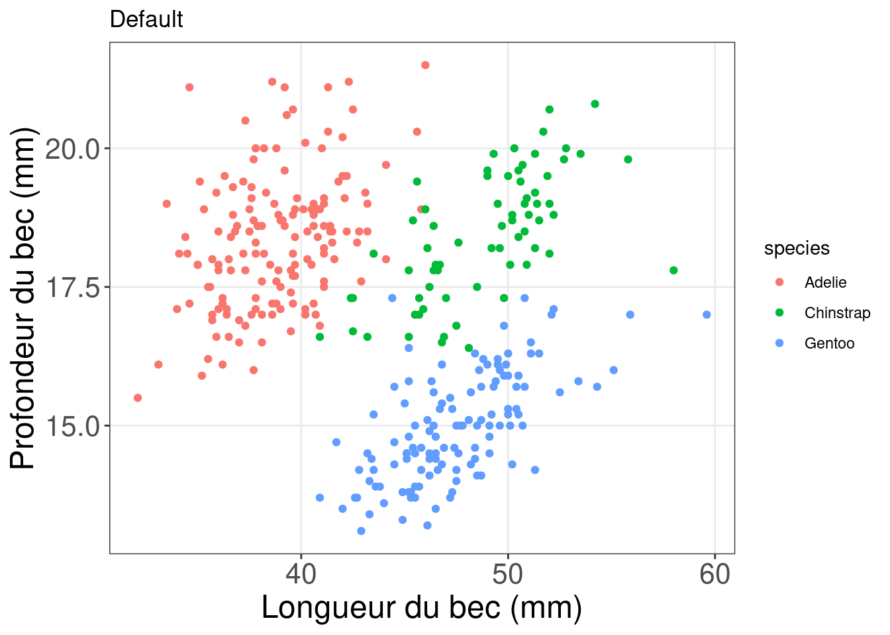

Chapitre 12 Utiliser des facettes pour diviser votre figure
12.1 Facettes selon une variable
ggplot(data = penguins) + geom_point(mapping = aes(x = bill_length_mm,
y = bill_depth_mm, colour = species)) + facet_grid(~species,
scales = "free") # l'échelle de l'axe des y peut varier entre les facettes.
12.2 Facettes selon deux variables
12.3 Titre et axes: changer la taille, la couleur et l’apparence
Revenons à notre visualisation des données de pingouins.
Nous pouvons ajuster les axes et les titres pour rendre les informations plus claires, afin que le graphique parle par lui-même.

12.4 Défi 3
Utilisez les donn√©es tips qui se trouvent dans reshape2 üì¶ pour reproduire le graphique ci-dessous.
## Installing package into '/home/runner/work/_temp/Library'
## (as 'lib' is unspecified)Notre conseil: Allez-y étape par étape! Commencez par theme_classic() et ajoutez theme() pour faire vos changements supplémentaires.
12.4.1 Défi 3: Solution
# Construire le graphique
tips.gg <- ggplot(tips,
# Étape 1. Spécifiez le mappage esthétique des axes et des légendes
aes(x = facture_totale,
y = pourboire/facture totale,
shape = fumeur,
couleur = sexe,
size = taille)) +
# Étape 2. Spécifiez le geom utilisé pour représenter les données
geom_point() +
# Etape 3. Spécifiez la variable utilisée pour faire des facettes
facet_grid( ~ time) +
# Étape 4. Spécifiez l'échelle de couleur utilisée pour représenter le sexe
scale_colour_grey() +
# Étape 5. Étiquettez le titre et les axes du graphique
labs(title = "Relation entre l'addition totale et les pourboires pendant le déjeuner et le dîner",
x = "Facture totale ($)",
y = "Rapport entre les pourboires et l'addition totale") +
# Étape 6. Définissez le thème
theme_classic() +
# Étape 7. Personnalisez le thème pour qu'il corresponde à la taille et à la couleur des titres du graphique.
theme(axis.title = element_text(size = 16,
couleur = "navy"),
axis.text = element_text(size = 12),
plot.title = element_text(size = 16,
couleur = "orange3",
face = "bold"),
# cette partie ajuste le texte dans les titres des facettes
strip.text.x = element_text(size = 14, face="bold"))
# générez notre beau graphique !
tips.gg